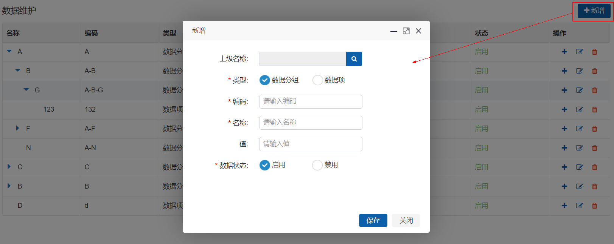
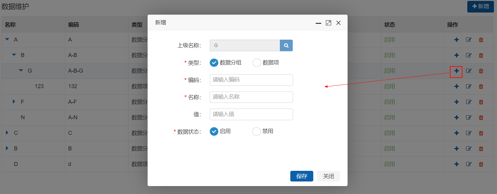
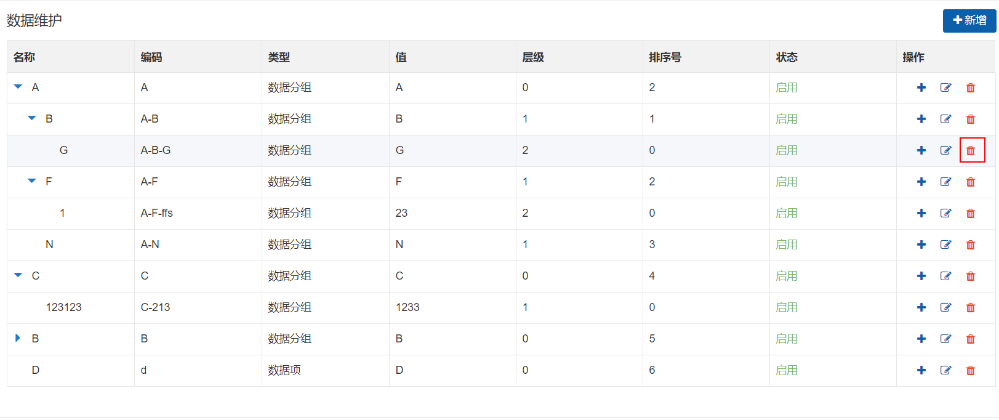

一、前言
二、安装部署
1.部署前准备
2.配置部署系统
3.启动服务
三、系统管理
1.用户管理
2.菜单管理
3.角色管理
4.日志管理
5.终端管理
6.组织管理
7.资源管理
8.数据维护
Published with GitBook
8.数据维护
数据维护
新增数据维护
编码、名称不超过25个字符；值不超过150个字符。
上级名称仅可选择一项。
类型为”数据项“的数据不能新增子级组织。

新增子级数据维护
编码、名称不超过25个字符；值不超过150个字符。
上级名称置灰不可修改。
类型为”数据项“的数据不能新增子级。

编辑
编码、名称不超过25个字符；值不超过150个字符。
组织类型仅可选择一项。
上级组织置灰不可修改。
类型为”数据项“的数据不能新增子级组织。
删除
将数据物理删除。

results matching "
"
No results matching "
"